Paleta de cores
Medida no navegador: fundos ponderados pela área ocupada, textos pela quantidade de caracteres. Destaques reúnem cores saturadas e fundos de botão.
Fundos
rgb(17, 17, 17)
rgb(1, 58, 101)
rgb(255, 255, 255)
rgb(244, 244, 244)
rgb(0, 0, 0)
rgb(21, 115, 81)
Textos
rgb(0, 0, 0)
rgb(107, 107, 107)
rgb(26, 26, 26)
rgb(94, 94, 94)
rgb(119, 119, 119)
rgb(255, 255, 255)
Destaques
rgb(1, 58, 101)
Gradientes
linear-gradient(90deg, rgb(94, 178, 242) 0px, rgb(94, 178, 242) 100%)Tipografia
Escala usada (desktop 1440px)
| Tamanho | Peso | Família | Amostra |
|---|---|---|---|
| 32px | 600 | Trebuchet MS | Texto de exemplo |
| 29px | 600 | Trebuchet MS | Texto de exemplo |
| 20px | 400 | Josefin Sans | Texto de exemplo |
| 20px | 600 | Trebuchet MS | Texto de exemplo |
| 20px | 700 | Trebuchet MS | Texto de exemplo |
| 18px | 400 | Gabarito | Texto de exemplo |
| 18px | 600 | Trebuchet MS | Texto de exemplo |
| 17px | 400 | Josefin Sans | Texto de exemplo |
| 17px | 600 | Trebuchet MS | Texto de exemplo |
| 16px | 400 | Josefin Sans | Texto de exemplo |
Mobile (390px): 24px/600, 20px/600, 18px/600, 17px/700, 17px/400, 17px/600, 16px/400, 15px/700 · H1 no mobile: 17px
Tags
| Tag | Família | Tamanho | Peso | Altura de linha | Espaçamento | Caixa | Cor |
|---|---|---|---|---|---|---|---|
| <h1> | Trebuchet MS | 17px | 600 | 22.1px | -0.2465px | none | #969696 |
| <h2> | Trebuchet MS | 20px | 700 | 26px | -0.24px | none | #1A1A1A |
| <h4> | Trebuchet MS | 29px | 600 | 37.7px | -0.377px | none | #1A1A1A |
| <p> | Josefin Sans | 17px | 400 | 22.1px | normal | none | #6B6B6B |
Botões
Recriados com os estilos computados reais. Efeitos de hover e animação não aparecem aqui; veja a seção de animações.
fundo #00000000 · texto #000000 · raio 0px · padding 0px 0px · 15px/700 none · 3x na páginafundo #00000000 · texto #000000 · raio 0px · padding 0px 0px · 20px/700 none · 1x na páginafundo #00000000 · texto #000000 · raio 0px · padding 0px 0px · 20px/600 none · 1x na páginaCards e containers
Odontologia Estética Odontologia Restauradora Odontologia Digital Odontologia Preventiva T
raio 0px · sombra rgba(0, 0, 0, 0.08) 0px 3px 6px 0px · borda 0px solid rgb(225, 225, 225) · 260x227pxPaula Sales 1 ano atrás O Danilo, além de ótimo profissional, competente, é muito cuidados
raio 12px · sombra none · borda 0px solid rgb(244, 244, 244) · 269x234pxBordas, raios e sombras
Sombras
rgba(0, 0, 0, 0.08) 0px 3px 6px 0pxrgba(255, 255, 255, 0.85) 0px 0px 0px 2pxrgba(0, 0, 0, 0.06) 0px 3px 6px 0pxEspaçamentos
- Largura do conteúdo mais comum: 1259px
- Padding vertical das seções (topo/base): 62px/62px (4x), 0px/0px (3x), 0px/62px (2x)
- Gaps mais usados (flex/grid): 10px, 20px, 15px, 30px, 17px 30px, 10px 26px
- Altura total da página: 8961px em 12 seções
Estrutura e ritmo de cores das seções
Cada faixa é uma seção de topo, com altura proporcional e a cor ou imagem de fundo real.
Animações, ícones e bibliotecas
- Keyframes próprios: blink, cover_search_fade_in, cover_search_fade_out, ctcBounce, ctc_fadeIn, ctf-sk-scaleout, fadeInLeft, fadeInRight, fadeInUp, flash, fullscreen_search_fade_in, fullscreen_search_fade_out, ht_ctc_anim_corner, ht_ctc_cta_stick, qi-addons-for-elementor-fade-in, qi-addons-for-elementor-fade-out, qode-atom-position, qode-atom-shrink, qode-atom-size, qode-atom-zindex, qode-ball-fall, qode-bounce, qode-bounce-delay, qode-clock, qode-clock-1, qode-clock-2, qode-clock-3, qode-clock-4, qode-cube, qode-double-pulse, qode-draw, qode-draw-from-right, qode-fade-in, qode-fade-out, qode-fussion-ball-1, qode-fussion-ball-2, qode-fussion-ball-3, qode-fussion-ball-4, qode-inline-underline-initial-hover
- Animações de entrada do Elementor: fadeInLeft, fadeInRight, fadeInUp, flash, none
- Classes de scroll reveal da casa: nenhuma
- Ícones: 29 SVG, 0 ícones de fonte
- Bibliotecas e tags detectadas: ga4, gsap, gtm, jquery, lottie, swiper
Snippets da biblioteca presentes nesta página
- Nenhum snippet da biblioteca identificado.
Imagens do site

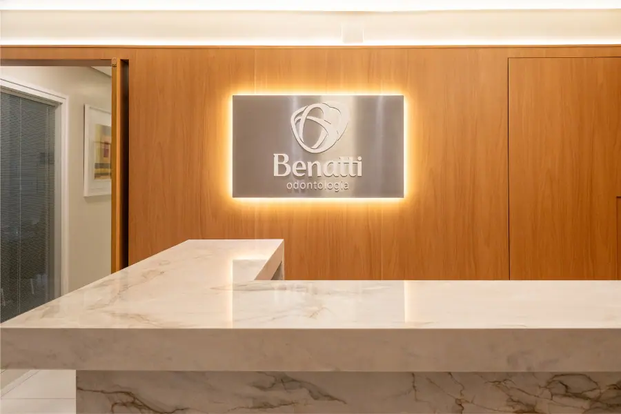
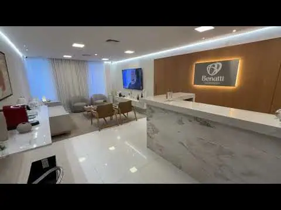
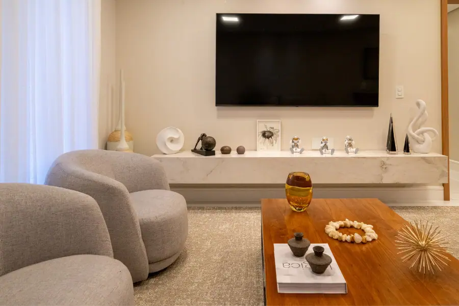
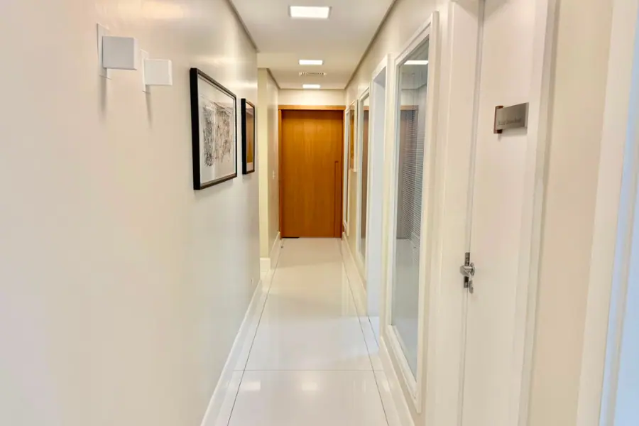
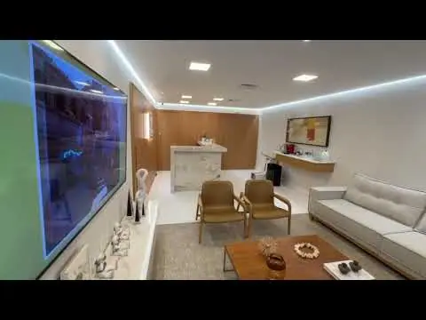
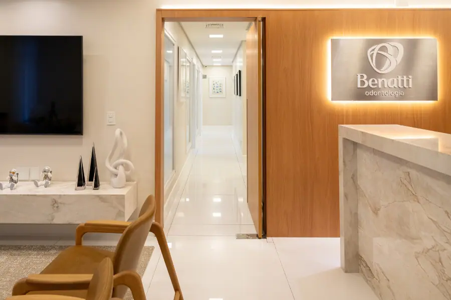
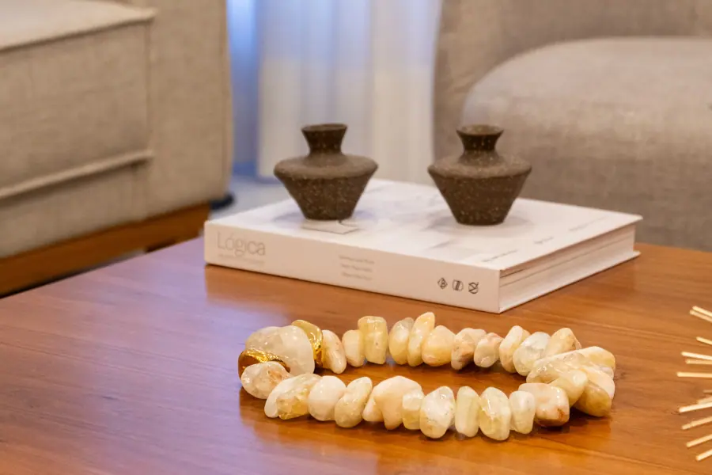
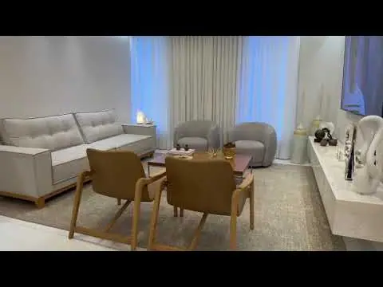
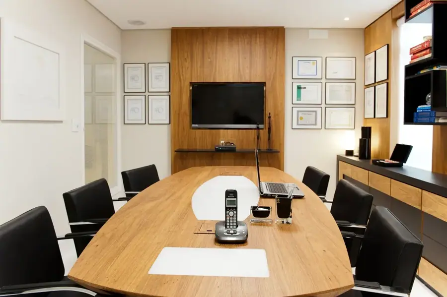
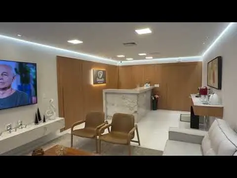
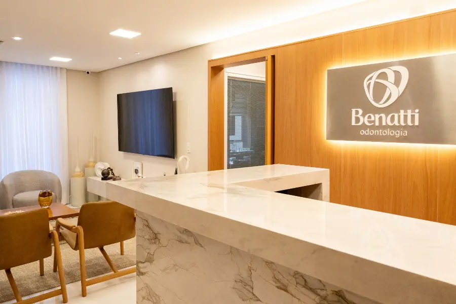
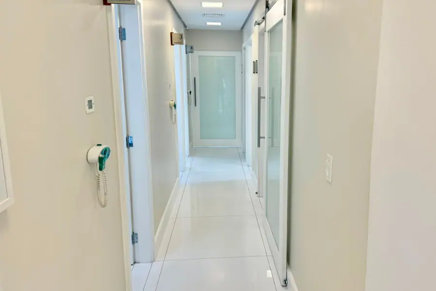
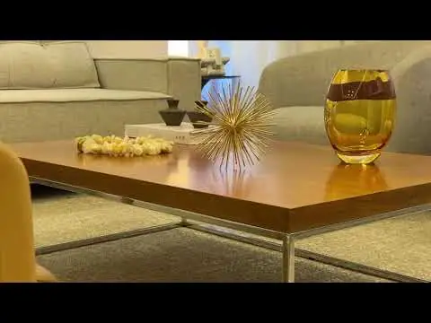
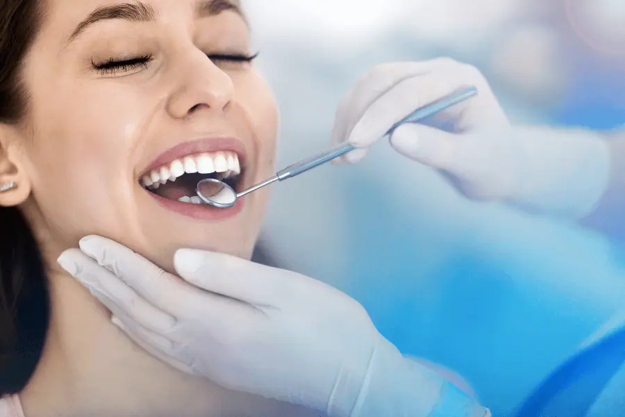
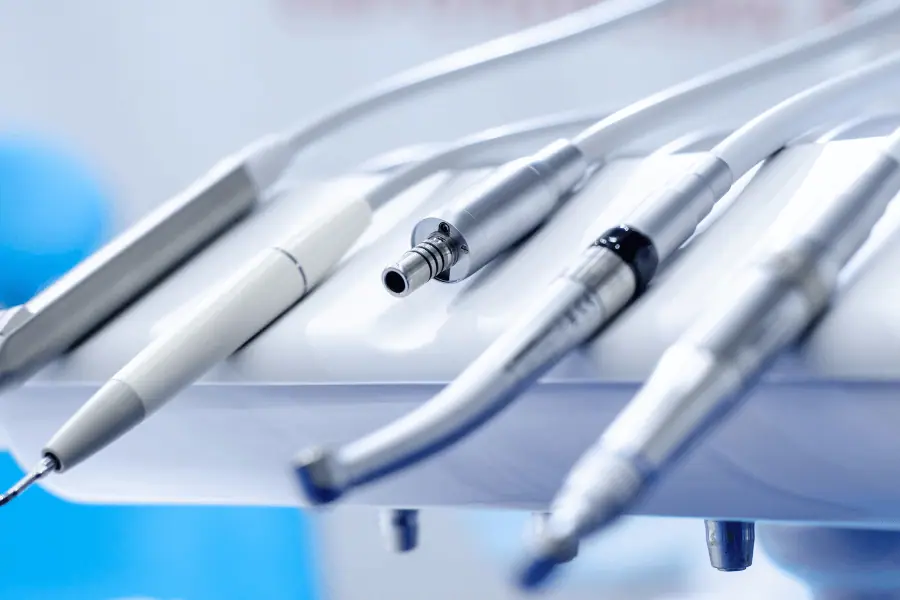
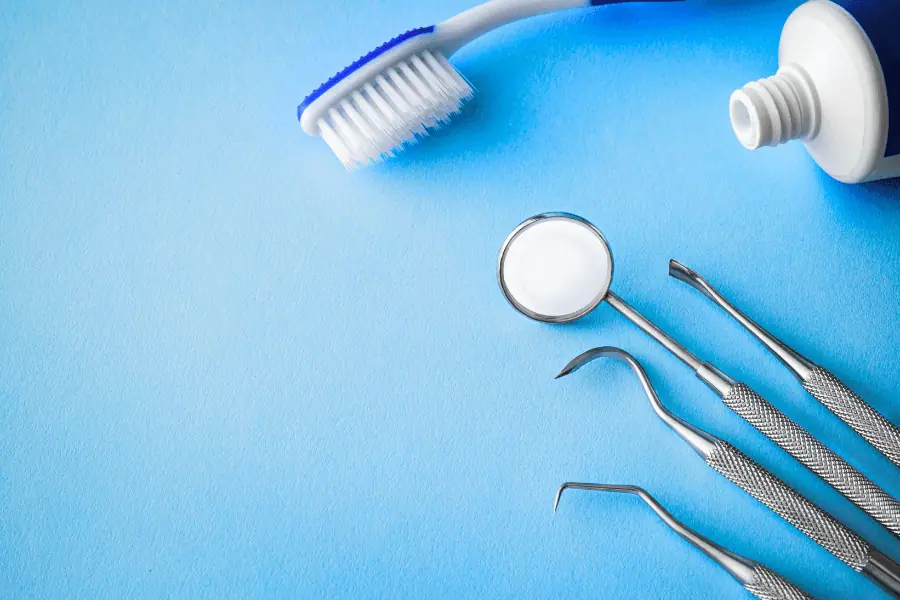
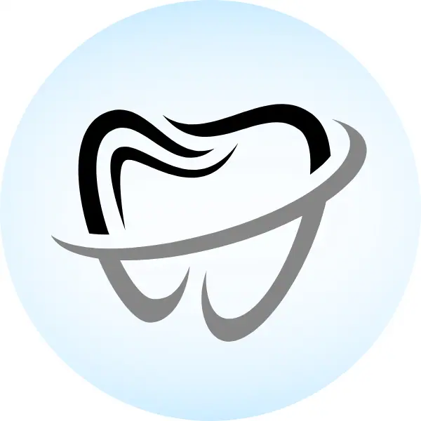
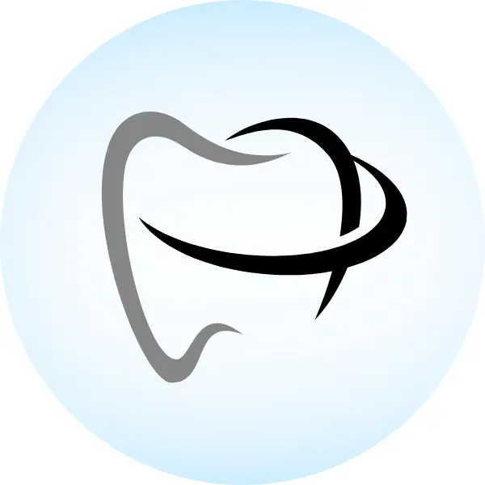
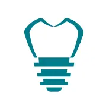